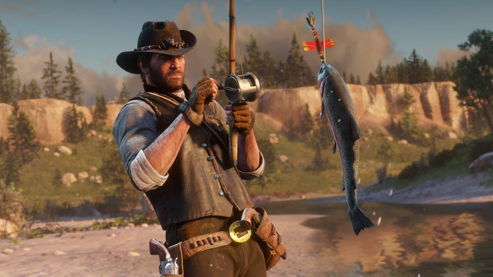
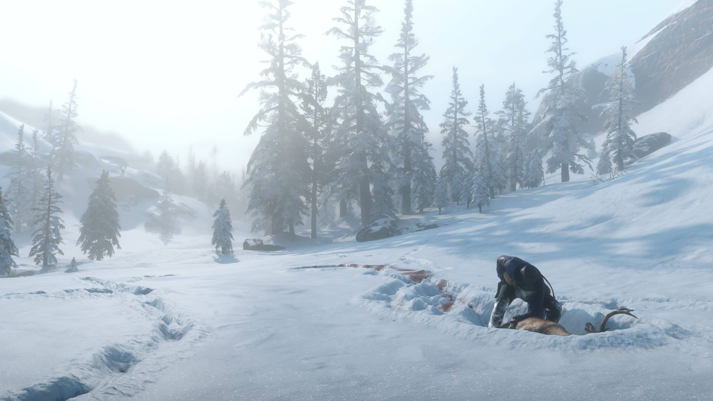
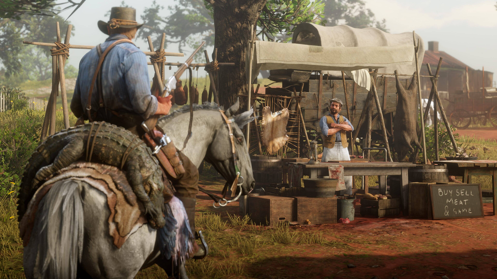

Wildlife and Nature
The wilderness of Red Dead Redemption 2 is filled with an incredible variety of wildlife that behaves realistically within the environment. Deer roam forests, bears patrol mountain regions, alligators dominate the swamps, and birds migrate across the skies. Animals react dynamically to weather, predators, and player actions, helping the world feel natural and immersive.

Hunting Game
Hunting plays a major role in both survival and progression throughout the game. Players can track animals using footprints, scent trails, and environmental clues before carefully choosing the proper weapon for a clean kill. Perfect pelts and animal parts can be used for crafting clothing , satchels, camp upgrades, and other valuable equipment. Hunting requires patience and strategy, especially when pursuing dangerous predators or rare legendary animals.

Fishing
Fishing offers a slower and more relaxing activity compared to the action-heavy parts of the game. Players can fish in rivers, lakes, and swamps using different bait types and techniques to catch various species. Legendary fish hidden throughout the map provide an additional challenge for players who want to fully explore the wilderness. The mechanic adds to the game’s immersive atmosphere by encouraging players to slow down and enjoy the environment.

Hunting Locations
Different regions of the map contain unique wildlife depending on the environment and climate. Forested areas are ideal for hunting deer and elk, while snowy mountain regions contain wolves and bighorn sheep. Swamps are home to alligators and exotic birds, and open plains provide opportunities to hunt bison and pronghorn. Learning where animals naturally spawn is essential for efficient hunting and collecting rare materials.

Selling and Crafting
After a successful hunt, players can sell pelts, meat, and animal parts to butchers and trappers for money and crafting materials. Trappers create specialized outfits and gear using rare pelts gathered throughout the game, rewarding players for hunting legendary animals. Meat can also be cooked at campsites to restore health and stamina cores, making hunting both financially useful and important for survival.